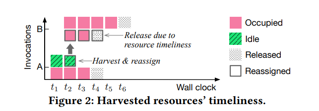

1 Abstraction¶
用户需要为函数预定义资源分配
函数变化的输入导致动态资源需求与静态资源分配之间存在矛盾
这篇文章介绍了 Libra ，一个安全、及时的多节点无服务器集群资源收集框架
Libra主动分析动态资源需求和可用性
2 Introduction¶
2.1 Motivation¶
不合理的配置以及输入数据的变化导致函数无法充分利用分配给其的资源，许多函数只能利用20%~60%的资源
2.2 目前新技术的局限性¶
目前主要有两类解决空闲资源利用的策略：第一是从服务提供者的角度，第二是从服务使用者的角度：
服务提供者利用空闲的资源来加速函数运行
服务使用者优化资源配置来使函数运行更加高效
然而，目前的策略无法解决很多问题：
无论使用者如何配置，大量的临时事件和变化的输入数据都会使静态资源分配不满足动态的资源需求
服务提供者依赖于违反无服务器性质的检查(non-trivial)，这种方法的普适性并不好
安排多个工作节点以轻量级算法来满足大规模调用和动态资源需求是一个复杂的调度问题，目前仍无法解决
2.3 重要观点以及贡献¶
Libra可以安全及时地收集闲置资源，以加速具有不同输入的大规模无服务器函数调用
Libra通过感知多个工作线程节点的资源及时性来做出调用调度决策，并通过从过度配置的调用回收的闲置资源来加速预置不足的调用
提出了一个新的指标：需求覆盖率，用它来量化每个节点上的闲置资源量和及时性，以实现及时性感知调度
总之，主要逻辑就是估计资源需求和调用时间 —— 回收未利用资源——调度空闲资源给资源不足的函数
Libra的不足：
Libra的资源检测等功能是通过机器学习模型得到的，所以可能会有预测错误的情况发生
Libra的资源调度算法为贪心算法，所以可能会导致函数平均响应延迟
3 背景和动机¶
3.1 回收资源使用¶
在不导致函数性能恶化的前提下，将函数没有利用的资源整合起来，提供给用户当作cache来加速函数执行
3.2 回收资源的必要性¶
在采用资源回收策略后，延迟时间有显著下降
4 Libra总览¶
4.1 利用回收资源的及时性¶
当一个配置不足的函数利用回收自其他函数的资源时，必须满足及时性的要求：当资源提供者运行结束后，回收得到的那一部分资源也会被回收

所以，资源及时性时决定从哪个函数调用中收获和释放资源，以及如何利用这部分资源。这篇文章开发了一个分析器来估计单个调用的动态执行时间和资源需求
4.2 解决了什么问题&如何解决¶
如何透明地（不知道用户的源码及输入数据）评估函数的动态资源需求和执行时间
还是利用上面提到的分析器
如何安全地、细粒度地回收资源而不影响函数的性能
设计了一个回收资源池来实现目的
如何最大化集群范围的调用加速，以及最大化地利用资源
设计了一个去中心化的共享调度器，以及时利用集群范围的空闲资源来加速功能执行
4.3 整体架构¶
首先上传用户的函数源码，用户预配置资源，例如两个CPU内核和1024MB的内存。用户预配置的资源是函数能利用资源的上限
函数是由具有不同输入的事件调用的，前端接受函数调用并将其转发到探查器(profiler)进行资源需求和执行时间的预测
若本次函数调用是该函数的第一次，则要经过一系列判断，然后预测；如果是已有调用，则直接根据数据进行预测
根据资源及时性调度算法选择工作节点，为了实现大规模部署，Libra利用多个去中心化分片调度器
所选工作节点中的资源池根据当前调用的预测来进行资源回收或加速(为其额外分配资源)。
5 分析¶
5.1 性能分析工作流¶
如果该函数调用在之前没有出现过，则Libra使用用户配置的资源信息来进行分析。
与此同时，LIbra利用输入数据生成数据集，用于使用Workload Duplicator的模型训练。当数据集准备好后，Libra会离线训练ML模型，以预测三个函数指标：CPU使用、内存使用、函数执行时间
通过分析三个函数指标，我们可以得知该函数的资源需求是否和输入规模相关，若是则用ML模型进行预测，否则利用历史直方图来进行预测
若该函数之前出现过，直接重用构建好的模型
5.2 Workload Duplicator¶
Workload Duplicator通过复制输入数据来扩充用于训练和分析分析模型的数据集，复制数据点后，profiler会创建一个具有足够资源分配的调用，来获取并分析所有执行的结果，并利用这些数据来训练ML模型
5.3 需求估算¶
5.3.1 对于资源需求与输入规模相关的函数¶
将CPU 和内存使用情况预测表述为多类分类问题，其中每个分配选项都是一个单独的类
对于执行时间预测，Libra 根据输入数据大小预测标量值，这是一个常见的回归问题
因此，探查器为每个函数训练并保留三个 ML 模型，包括两个分类模型和一个回归模型
5.3.2 对于资源需求与输入规模不相关的函数¶
Libra会在识别到资源需求与输入规模无关的函数后，会在线收集后续调用的 CPU/内存峰值和执行时间，由于缺乏对黑盒函数的了解，Libra需要一个分析窗口来收集足够的历史信息来构建分布。
Libra 根据窗口期间收集的信息为每个函数构建三个直方图模型，并在提供新调用后不断更新模型。
直方图数据结构跟踪每个函数的 CPU 峰值、内存峰值和执行时间的分布。
6 资源回收¶
6.1 资源池¶
Libra 维护一个收获资源池，以跟踪从过度配置的函数调用中收获的闲置资源，并记录收获资源的优先级以进行重新分配
资源池具有一种对于已回收资源的跟踪机制，每个跟踪对象使用三个元素的元组表示收获的函数调用：（invo_id、hvst_resource_vol、priority）
资源池有两个基本操作：put和get。Libra通过指定调用ID、收获的资源量和优先级将回收的资源放入池中；为了加速调用，Libra通过指定所需的数量，以最大努力的方式从资源池中获取资源
优先级。优先级越高（结束早）的跟踪对象会越早被分配出去
抢先释放。当被回收资源的函数执行完成时，回收的资源失效，Libra采用抢占式释放操作，实时地将回收的资源释放
重新回收。当一个获取其他函数资源的函数执行完成后，其自身本来拥有的资源和额外获取的资源都将被释放，其中额外获取的那部分资源会被重新收入资源池，其优先级仍为这些资源最初进入资源池中的时间
并发。回收的资源一次只能由一个函数调用访问，因此资源池通过互斥锁是实现原子资源操作
缓解OOM问题。
为每个函数设置内存下限，以便 Libra 需要为收集调用保留最小内存
对每个容器使用保护措施来检测内存使用量，并尝试提前释放收集的内存
我们停止为由于 OOM 问题而经常触发保护的函数收集内存，并退回到用户定义的内存分配
6.2 内存回收导致的效率问题¶
Libra 使用 ML 和直方图模型估计传入函数调用的实际资源需求。但是，模型的潜在错误预测可能会导致性能下降——函数调用的性能会因资源过度回收而降低。
当检测到资源已收集的函数调用的近似性能下降时，Libra 会立即使用抢占式释放操作将所有收集的资源返回到调用中。
例如，当收到传入的函数调用时，Libra 会使用容器执行该函数。在执行期间，Libra 会在监控窗口中持续监控容器的资源使用情况（例如 100 毫秒）。如果使用率接近某个阈值（例如 80%），Libra 会立即使用抢占式释放返回从调用中获取的所有资源
7 函数调度¶
7.1 实时调度的复杂性¶
在判断要选择哪一个节点来容纳函数执行时，采用贪婪算法，使得资源量和及时性都具有最大的可用性
7.2 需求覆盖¶
资源可用性有两个维度：数量和及时性。因此，使用资源量和可用持续时间的乘积来表示资源可用性（例如，2 个 CPU 内核× 10 秒）。
我们设计了一个新的指标，即需求覆盖率，它被定义为工作节点的收获资源可以满足多少调用的资源需求的比率。
传入的调用需要从t3到t7的两个额外资源单位
我们为每个收获资源池计算单独的 CPU 和内存需求覆盖率。最后，我们计算加权需求覆盖率
D = α×Dc + (1−α)×Dm，其中 Dc 和 Dm 表示 CPU 和内存需求覆盖率，α ∈ [0,1] 是控制每种类型需求覆盖率贡献的权重
7.3 算法设计¶
调度程序首先根据传入函数调用的用户定义资源（即 user_cpu 和 user_mem）和分析器估计的实际资源需求（即 pred_cpu 和 pred_mem）将传入函数调用分为两类：
无需加速的调用：用户预分配的资源足够
需要加速的调用：用户与分配的资源不足
对于无需加速的调用，调度程序通过散列算法将函数的调用分配给同一工作节点（此前已执行过该函数调用），该算法通过在同一工作节点上重用容器来减少调用的冷启动。如果工作节点没有足够的可用资源，将再次执行哈希算法以查找另一个可用的工作节点
对于可加速的调用，调度程序首先选择一组具有足够可用资源的工作器节点，以满足调用的用户定义资源需求。然后，调度程序计算每个选定工作节点的 CPU 和内存的需求覆盖率。最后，调度器贪婪地搜索最大加权需求覆盖率的工作节点来执行调用
7.4 去中心化分片调度器¶
我们在 Libra 中使用分散式分片调度程序来扩展大型无服务器集群的可扩展性。Libra 管理一组调度程序，这些调度程序将函数调用分发到多个工作节点
节点的容量（即 CPU 和内存）在所有调度程序之间平均分片。例如，如果具有 32 个 CPU 内核和 32 GB 的节点在四个调度程序之间分片，则每个调度程序控制对该节点上 8 个核心和 8 GB 的访问。
虽然每个节点以分片的形式分配到每一个调度器上，但每个调度器可以观察到一个节点作为一个整体的需求覆盖率
调度程序之间无需同步共享状态，也无需查询每个节点的状态。调度程序只需查询其本地数据即可得到各个节点的情况
8 Libra的实现¶
Libra是在Apache Openwhisk平台实现的，使用python和Scala两种语言。
前端。由于OpenWhisk 仅允许用户定义其函数的内存限制，并根据内存按比例分配 CPU 功率。所以在前端添加了一个CPU参数，使前端能后采用用户输入的CPU和内存配置
Profiler。两个库：multiprocessing 和 scikit-learn
函数调度器。Libra的及时性感知调度算法和去中心化分片调度器基于Openwhisk的内置负载均衡器，将回收资源池的状态信息嵌入到调用程序的健康ping信息中
回收资源池。基于Openwhisk的容器池实现了回收资源池。
抢占释放。使用Docker库中的docker update API来实现该操作。API 可以实时更新多个容器的 CPU 和内存配置
安全。我们将保护措施实现为在 OpenWhisk 容器运行时内运行的守护进程。当容器收到调用并开始执行时，它会首先激活保护过程。如果在执行代码时资源使用量超过保护阈值，守护进程会立即将请求发送回 OpenWhisk 的容器池。
9.性能评估¶
在三个集群上部署和评估Libra，Libra会在审查后开源
9.1 评估指标¶
9.1.1 函数响应延迟¶
函数响应延迟是从调用函数到收到执行结果的端到端响应时间，我们定义
作为评估Libra性能提高的指标
9.1.2 系统资源利用率¶
该指标衡量无服务器计算平台利用硬件资源的效率，定义
其中utilized_resources代表函数调用使用的资源，available_resources代表用户的总可用资源
9.2 实验设置¶
9.2.1 实验环境¶
在三个Openwhisk平台的集群上评估Libra：
Single-node cluster：有3个结点，其中一个派生函数结点、一个控制结点、一个控制结点。其中工作结点配置为：72 Intel Xeon E5- 2670 CPU cores and 72 GB of memory
Multi-node cluster：有6个结点，工作结点增加到4个，每个工作结点配置为：32 Intel Xeon E5-2420 CPU cores and 32 GB memory
Jetstream cluster：50个结点，是一个云计算环境。每个工作结点配置：32 Intel Xeon E5-2420 CPU cores and 32 GB memory
9.2.2 工作负载¶
对11个函数调用跟踪集进行了采样：
One single trace set for single-node cluster evaluation. The single set consists of 165 function invocations
Ten multi trace sets for multi-node cluster evaluation. The ten multi sets consist of in total 1,050 function invocations with invocation frequency increasing from 10 to 300 request per minute (RPM).
我们采用现实世界的无服务器基准测试套件 SeBS [14] 来进行实际评估。
9.2.3 Libra内的模型¶
9.3 Libra资源回收的效率¶
我们将 Libra 与两个现有的无服务器平台资源管理器以及单节点集群上的三个变体进行了比较：
default：OpenWhisk（也在现有的无服务器平台中）中的默认资源管理，用于将用户定义的资源分配给函数。在各个函数执行期间，资源分配保持固定，并且同一函数的所有调用都会接收固定数量的资源
Freyr：一个最先进的无服务器资源管理平台，它使用 DRL 来收集闲置资源并加速功能执行 [49]。我们基于其开源代码存储库实现了Freyr，并按照其论文中描述的算法在评估中使用相同的工作负载训练模型。
Libra-NS：没有保障机制的Libra的变体。我们会在 Libra 执行函数调用时关闭保护守护程序
Libra-NP：没有分析器的 Libra 的变体。此变体没有探查器来预测三个指标（即 CPU 使用率峰值、内存使用峰值和执行时间）。相反，它使用移动窗口来确定三个指标。每个函数都有一个用于监视调用历史记录的移动窗口。移动窗口跟踪 n 个最新调用，并将最大 CPU 使用率峰值、内存使用峰值和执行时间作为下一次传入调用的决定。我们将窗口大小设置为实验中每个函数 5 个
Libra-NSP（无保护和剖析器），Libra的变体，没有保障机制和分析器。
9.3.1 与前两个现有的无服务器平台资源管理器比较¶
响应延迟。Libra 优于其他两个平台，因为通过资源及时性意识仔细收集和加速函数调用。与OpenWhisk默认和Freyr相比，Libra将相同工作负载的第99个百分位数分别减少了50%和39%
加速和性能下降。Libra 的性能优于其他两者，因为它提供了更快的函数调用执行，而不会显著降低性能。ibra 在响应延迟方面最差时会降低调用性能 2%，而 Freyr 在最坏的情况下会降低 180% 的性能下降。
系统利用率和工作负载完成时间。与OpenWhisk默认和Freyr相比，Libra的平均CPU/内存利用率分别为3.82×2.09×和2.93×/2.48×。相应地，Libra完成工作量的速度提高了51%和43%
回收资源和加速情况。Libra性能最好。
9.3.2 与两个Libra变体比较以分析profiler和safeguard的重要性¶
略
9.4 Libra 调度的有效性¶
然后，我们在多节点集群上部署 Libra，以评估其调度算法的有效性。我们将 Libra 的调度算法与四个基本调度算法进行比较：
default：OpenWhisk 控制器为每个函数计算一个唯一的哈希键，并始终将同一函数下的调用安排到同一节点
RR：通过以循环方式向不同的调用者发送连续请求来分配负载
JSQ（加入最短队列）：通过将传入调用发送到具有最少挂起作业的节点来有效减少排队时间和资源争用
MWS（最小工作集）
评价指标：
P99 response latency
System utilization
Workload completion time
Idle time of harvested resources
9.5 可扩展性¶
主要分析强扩展性和弱扩展性
强扩展性：固定函数调用总数，增加工作结点
弱扩展性：分配个每个结点的平均调用数固定，增加工作结点
将 Libra 调度程序的数量从 1 个逐渐增加到 4 个，以检查增加并发调度程序的有效性。
强扩展：启动 1000 个并发调用，其中每个函数同时调用 100 次
弱扩展：将分配给每个工作线程的平均调用次数设置为 20，并评估 Libra 的弱扩展，这意味着 10 个节点有 200 个并发调用，50 个节点有 1000 个并发调用。
调度开销：将调用的调度开销定义为调度程序拾取它直到将其发送到节点的时间。图 12（c） 显示了工作负载强度从 200 增加到 1000 时的平均开销。Libra 始终将开销保持在 1 毫秒以下
9.6 Profiler的模型分析¶
指标。采用两个指标，准确性(accuracy)和\(R^2\)来分别评估多分类和回归模型的性能
模型。为每个任务检查了四种流行的 ML 模型。对于CPU/内存使用情况和执行时间预测，评估了逻辑/线性回归（LR），支持向量机（SVM），神经网络（NN）和随机森林（RF）。数据集以 7：3 的比例拆分，用于训练和测试
预测性能。RF在平均精度和\(R^2\)分数方面的所有任务都优于其他三种模型。
区分输入规模相关/不相关的函数。可以通过指定准确度阈值和\(R^2\)分数来在这两种类型之间划定界限
预测开销。Libra的预测引入了不到2毫秒的平均预测开销。与大多数无服务器函数的执行时间相比，开销可以忽略不计，因为 Azure 函数上 75% 的函数执行至少 1 秒
训练时间。初始化模型的离线训练耗时不到 120 毫秒，而现有模型的在线训练耗时不到 1 毫秒。
9.7 输入规模敏感度¶
Libra性能更优